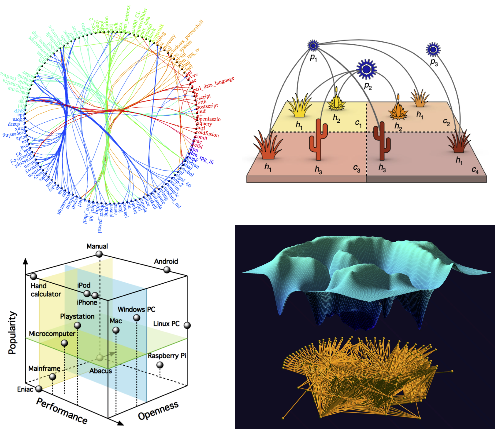

Welcome to the Evolution of Networks Lab

The Evolution of Networks Lab belongs to the Institute for Evolutionary Biology (IBE). Dr. Sergi Valverde, a CSIC scientist, is the group's leader and aims to find universal evolutionary principles in natural and artificial networks. The group brings expertise in complex systems, complex networks, ecology, and cultural evolution (see below a recent listing of publications). We are interested in the role played by emergence, convergence, and environmental fluctuations in the origin of evolutionary innovations, as well as how the pattern and process of evolution differ when traits are learned rather than transmitted genetically. Social learning provides a non-genetic pathway for the transmission of adaptive traits, and while social learning is common in many species, ours is the only one that is capable of cumulative cultural evolution with tremendous consequences for human evolution as well as for the biosphere as a whole.
We have identified different approaches to extend evolutionary theory beyond the domain of biology. Our research relies on both empirical analysis and theoretical models. One of the distinctive methodologies of our laboratory is the complex network perspective on the evolution of technology and culture, which we have refined over the years. We have developed systematic methods for collecting and analyzing the vast fossil record of inventions, including computational and network analysis of millions of patents.
Members
 |
Sergi Valverde (Principal Investigator)I am a complex systems scientist at the Institute for Evolutionary Biology (IBE), where I study the origin of innovations in technology and nature. In school, I studied computer science and physics, but I have always been interested by evolutionary theory and its applications outside of biology, including social evolution. One of my main research interests is the evolution of complexity in natural and artificial systems, as illustrated by the coevolution of hardware and software. |
 |
Pere Renom (Postdoctoral Researcher)My professional interests are science and science communication. In the scientific field, I studied Biology at the University of Barcelona (UB) and got my PhD in Biomedicine at the Institute of Evolutionary Biology (UPF) with a thesis on paleogenomics. I also have a degree in Philosophy from the UB. I started my research in marine ecology and now I focus on macroevolution. In science communication I wrote 4 books and published about fifty articles. Since 2006 I work as a science reporter in several programs of Catalan Television where I have already accumulated more than 500 interventions. Is the tape of life replayable or not replayable? That is the question I would like to solve. |
 |
Salva Duran-Nebreda (Postdoctoral Researcher)I am a Biotechnologist and Complex Systems researcher interested in the Major Transitions in Evolution. In particular, I am fascinated by how individuality shifts as new levels of selection are created and how emergent properties appear in collective systems, from multicellular entities to ecosystems and societies. My research includes aspects of Synthetic Biology, EvoDevo, Pattern Formation, Complex Networks in Ecology and Cultural Evolution. |
External Members
 |
Blai Vidiella (Postdoctoral Researcher)Together with Sergi Valverde and Josep Sardanyes (CRM), I am a postdoctoral researcher on the MPA4sustainability Biodiversa project. To prevent ecological collapse, I am designing, simulating, and evaluating engineered systems. Thus, I draw on concepts from a wide range of disciplines, including ecology (for determining what's needed), computer science (for the design of circuits), synthetic biology (for organism engineering), dynamical systems (such as ghost phenomena and chaos), and mathematical modeling (to test and predict behavior). My research aims to a deeper comprehension of the interplay between human activities and the biotic components of endangered ecosystems, as well as how to keep these ecosystems healthy. Will it be possible to Terraform our planet? |
Keywords: Complex Systems, Complex Networks, Cultural Evolution, Ecology